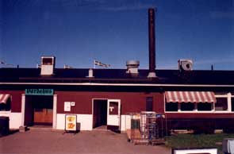
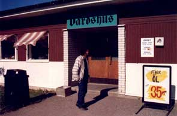
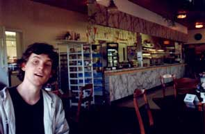
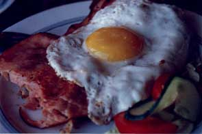
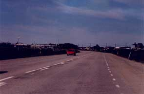

Svista Värdshus Svista Värdshus
We cruised northward on the European Expressway towards Svista Värdshus (Svista Tavern). The sun was casting a bright glare over midsummertime Sweden. Most of the year Sweden is a dark and gloomy place, but in the summer a transformation takes place; the mythical past with all its faeries and fauns suddenly becomes more present as the fertile soil blooms for a short period of time.
From the road, Svista Värdshus appeared as a perfect embodiment of all that is Sweden: protective flags that move to the unseen breeze of languid summer winds, a homestead protected from all sides by sheltering fruit-bearing trees, big lawns that provide a friendly border to the neighbouring houses, and a well kept entrance road.

The parking lot was on the back side. We left the car and amazed at this industrial visage, and how it could possibly belong to the same house that moments before took us by storm. Somewhat like the beauteous siren-of-the-woods that lures travellers to stray from the beaten track, Svista Värdshus's back is an ugly empty hole that turns the beholder to stone.

Anyway, the Powerbase Alpha S.W.A.T. team had battled with entropy before, and won. The Gothic lettering above the portal echoed of Third Reich aesthetics, but we just stayed stalwart and entered beneath the canopy of faerieland.

Inside, time had stood mostly still since the mid-70's: fake marble and fake wooden panels lined the walls, and the wall-to-wall carpet was true to the same standards. After walking through a small passage andblundering into the kitchen, we found the lobby, a small secluded place with an array of gambling machines, as well as a fake dolphin in 1:2 scale. A small gangway led to the living quarters, and a big open door led into the dining hall.

At the desk, we debated what piece of overpriced food to choose, and finally ordered one trucker sandwich each. We sat down and sampled our surroundings. After a while, a bell sounded, and we could collect our Pavlovian treat. The trucker sandwiches dripped with warm fat. We chugged happily into these enormous chunks of saturated fats and top-of-the-food-chain DDT. A sense of contentment filled our hearts, the feeling of eating real food, not some modern junk but the kind of food people ate in the old days, the kind of food a calory-deficient truck-driver from the North needs to haul that huge truck from Treriksröset to Smygehuk.
Soon the food was devoured, but while our bodies were satisfied, our minds were still not at ease, so we took our share out of a large pot of yummy coffee that sat purring on the counter. The coffee was delicious, truly fucking great; we wondered how it is that these places always have the best food and coffee. Beer tends to be expensive and watered-down, but food and coffee on a Swedish roadside tavern - nothing can beat it!

We sped down the road in a dazed state of mind, thinking about how rare it is to experience something so genuinely Swedish. "Authentic" and "Quality" used to be two Swedish buzzwords, everything in Sweden had to be robust and genuine. In the rest of modern Sweden this is just a dream but when the shit comes down in Svista it's fucking quality shit. We rode the Italian Powerbase Car, fleeing this perfect place for something more hollow, home to the Ballardian suburbia that we know and love.
-Joel Westerberg